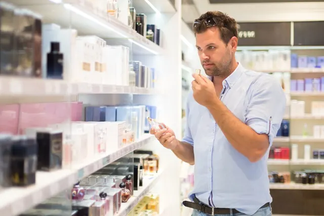

Laat je verleiden door de geuren uit de parfumerieën van Nijmegen
Gepubliceerd op 10 mei 2023, bijgewerkt op 24 januari 2024
Onderdeel van de gids Winkelen in Nijmegen

De wereld van de parfumerie. Een plek waar je heerlijke geuren en prachtige cosmetica kunt vinden. Als je op zoek bent naar een nieuwe geur of cosmetica, dan is de parfumerie de place to be. Maar wat kun je precies vinden bij de parfumerie?
Welk parfums en cosmetica kun je vinden bij de parfumerie?
Laten we beginnen met de parfums. Een parfumerie heeft een uitgebreide collectie parfums van verschillende merken. Van de bekendere merken zoals Chanel, Dior en Gucci tot de exclusievere merken zoals Clive Christian en Roja Parfums. Er zijn parfums voor elke gelegenheid en stemming. Of je nu op zoek bent naar een frisse geur voor overdag, een verleidelijk aroma voor een avondje uit of een warme en kruidige geur voor de koude winterdagen.
Maar de parfumerie biedt meer dan alleen parfums. Je kunt hier ook terecht voor cosmetica van verschillende merken zoals Estée Lauder, Lancôme, Yves Saint Laurent en Clinique. Van foundation tot lippenstift en van oogschaduw tot mascara, er is genoeg keuze. Bovendien hebben veel parfumeries ook verzorgingsproducten zoals crèmes, serums en toners om je huid in topconditie te houden.
Kortom, bij de parfumerie kun je terecht voor een uitgebreide collectie aan parfums en cosmetica. Of je nu op zoek bent naar een nieuwe geur, een nieuw make-upproduct of gewoon wat inspiratie wilt opdoen, de parfumerie heeft het voor je.

Voor welke cadeaus ga je naar de parfumerie?
Een mooie geur is altijd een goed idee. Maar in plaats van voor de bekende geuren te gaan, kun je ook kiezen voor een exclusievere geur die niet bij elke parfumerie te vinden is. Denk aan merken zoals Tom Ford, Kilian of Byredo. Een speciale geur laat zien dat je echt de tijd hebt genomen om iets bijzonders te vinden.
Maar de parfumerie biedt meer dan alleen geuren. Een luxe huidverzorging set van een bekend merk is een geweldig cadeau voor iemand die houdt van een goede ski care routine. Denk bijvoorbeeld aan een set van La Mer of La Prairie. Ook een mooie make-upset van een bekend merk zoals Chanel, Dior of Yves Saint Laurent zal zeker in de smaak vallen.
En laten we de cadeausets niet vergeten. Veel merken brengen rond de feestdagen speciale cadeausets uit met bijvoorbeeld een geur en bijpassende bodylotion of een make-upset met verschillende producten van hetzelfde merk. Deze cadeausets zijn niet alleen leuk om te geven, maar ook om te krijgen.
Kortom, bij de parfumerie zijn er genoeg cadeaus te vinden voor iemand die houdt van geuren en cosmetica. Of je nu kiest voor een exclusieve geur, een luxe skincareset of een mooie make-upset, je zult zeker een glimlach op het gezicht van de ontvanger toveren.
Wat zijn de bekendste parfumeries?
Tegenwoordig worden veel parfums online besteld. Op het web heb je de meeste keuze en kun je geuren bestellen tot aan de andere kant van de wereld. Maar, dan weet je nog niet of de geur bij je past. Daarvoor is het toch wel fijn om even bij de Douglas of de ICI-Paris binnen te lopen. Die ook in Nijmegen gevestigd zijn, de Douglas heeft er zelfs twee! Dit zijn ook meteen de twee bekendste namen voor de meeste mensen. Bekijk hier het overzicht van drogisten en parfumeries!
Hoe weet je welke geur het beste bij je past?
Je staat in de Douglas en dan komen de geuren op je af. Maar welke past het beste bij jou? Als je te veel geuren uitprobeert dan ruik je door de bomen het bos niet meer. En de geur kan in de loop van de dag gaan veranderen. Of anders ruiken op jouw huid dan op zo’n stokje waar je de geur op kan spuiten. Neem uiteindelijk een paar testers mee naar huis is ons advies. Welke?
Een goede manier om te beginnen is door te kijken naar welke geuren je al lekker vindt. Houd je van bloemige, kruidige of houtachtige geuren? Dit kan je helpen om te bepalen in welke categorie je moet zoeken. Probeer dan verschillende geuren uit binnen deze categorieën om te zien welke het beste bij je past.
Je kunt ook kijken naar de gelegenheden waarvoor je de geur wilt gebruiken. Wil je een geur voor dagelijks gebruik of voor speciale gelegenheden? Dit kan ook een rol spelen bij het kiezen van de juiste geur.
Conclusie
Winkelen in Nijmegen voor de perfecte geur of cosmetica is een avontuur op zich. De parfumerieën in deze stad bieden een breed scala aan producten, van luxe huidverzorgingssets tot exclusieve parfums. Of je nu op zoek bent naar een nieuwe geur voor jezelf of een bijzonder cadeau voor iemand anders, de parfumerieën in Nijmegen hebben voor elk wat wils. Bekende winkels zoals Douglas en ICI Paris zijn slechts enkele van de vele opties die de stad te bieden heeft. Het is de moeite waard om persoonlijk deze winkels te bezoeken, zodat je de geuren echt kunt ervaren en testen. Zo vind je de geur die het beste bij jou of de ontvanger past. Of je nu gaat voor een bloemige, kruidige of houtachtige geur, winkelen in Nijmegen voor parfums en cosmetica is een ervaring die je niet wilt missen.
Wij hopen dat je geniet van het zoeken naar de beste geur voor jezelf of om als cadeau te geven! En vergeet niet even binnen te lopen bij een van de vele parfumeries die Nijmegen rijk is.
DE ULTIEME TROUWGIDS VIND JE HIER
Parfumerieën in Nijmegen
Zin om te beginnen? In onze bedrijvengids vind je alle 7 parfumerieën in Nijmegen, met openingstijden, kenmerken en een kaart.
Bekijk alle 7 parfumerieën in Nijmegen
Heb je zelf een parfumerie? Laat je hier uitlichten.